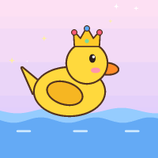
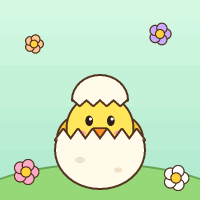
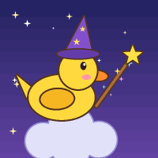
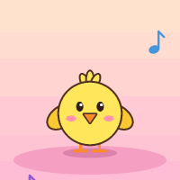
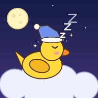
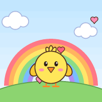
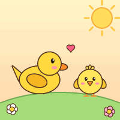
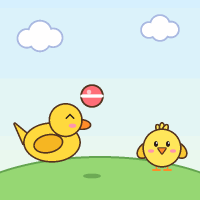
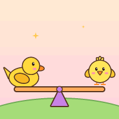
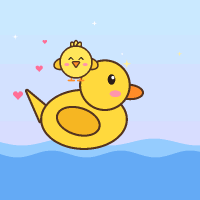

Księżniczka Kaczuszka
Pływa po zaczarowanym jeziorze w złotej koronie.
Kaczuszki i kurczaczki z krainy czarów

Pływa po zaczarowanym jeziorze w złotej koronie.

Właśnie się wykluł i zerka, co słychać na łące.

Jedno machnięcie różdżką i niebo pełne iskierek.

Hop, hop! Nikt nie tańczy tak jak on.

Drzemie na chmurce i śni o kąpieli w jeziorku.

Zbiera serduszka, które fruwają nad wzgórzem.

Kaczuszka i kurczaczek, razem od pierwszego pisku.

Hop do kurczaczka, hop do kaczuszki. Kto pierwszy upuści?

Raz w górę, raz w dół. Kurczaczek waży mniej, ale bardzo się stara.

Kurczaczek nie umie pływać, więc kaczuszka go wozi.